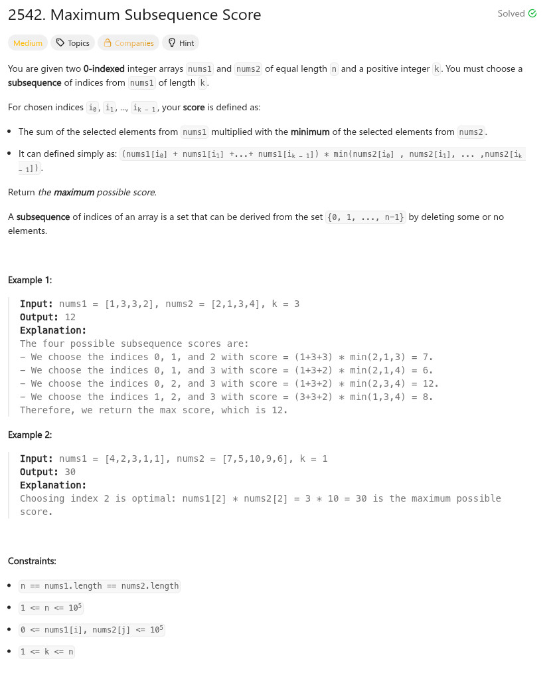

參考資訊：
https://www.cnblogs.com/cnoodle/p/17549555.html
https://www.geeksforgeeks.org/c/c-program-to-implement-priority-queue/
題目：

void sort_node(int *buf, int index)
{
int left = (index - 1) / 2;
if (index && (buf[left] > buf[index])) {
int t = buf[index];
buf[index] = buf[left];
buf[left] = t;
sort_node(buf, left);
}
}
void sort_leaf(int *buf, int size, int index)
{
int s = index;
int left = (2 * index) + 1;
int right = (2 * index) + 2;
if ((left < size) && (buf[left] < buf[s])) {
s = left;
}
if ((right < size) && (buf[right] < buf[s])) {
s = right;
}
if (s != index) {
int t = buf[index];
buf[index] = buf[s];
buf[s] = t;
sort_leaf(buf, size, s);
}
}
int sort_queue(const void *a, const void *b)
{
return ((*(int **)b)[0] - (*(int **)a)[0]);
}
long long maxScore(int *nums1, int nums1Size, int *nums2, int nums2Size, int k)
{
long long t = 0;
long long r = INT_MIN;
long long sum = 0;
int cc = 0;
int idx = 0;
int size = 0;
int **sorted = NULL;
int buf[100000] = { 0 };
sorted = malloc(sizeof(int *) * nums1Size);
for (cc = 0; cc < nums1Size; cc++) {
sorted[cc] = malloc(sizeof(int) * 2);
sorted[cc][0] = nums2[cc];
sorted[cc][1] = nums1[cc];
}
qsort(sorted, nums1Size, sizeof(int) * 2, sort_queue);
for (cc = 0; cc < nums1Size; cc++) {
sum += sorted[cc][1];
buf[size++] = sorted[cc][1];
sort_node(buf, size - 1);
if (size > k) {
sum -= buf[0];
buf[0] = buf[--size];
sort_leaf(buf, size, 0);
}
if (size == k) {
t = sum * sorted[cc][0];
if (t > r) {
r = t;
}
}
}
return r;
}